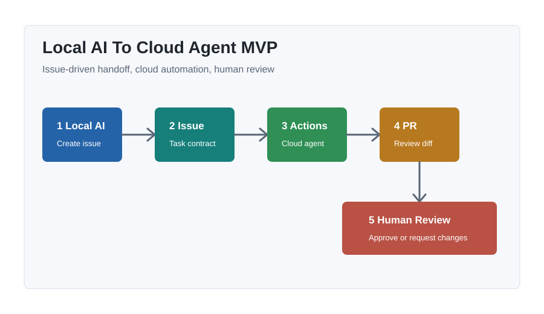

MVP 流程
從本地 AI 到 GitHub PR 審查
本地觸發
本地端 AI 發起任務
本地端 AI 先把需求整理成繁體中文 Issue，再透過 GitHub CLI 建立任務入口。
- 第一階段使用 scripts/create_agent_issue.py。
- 第二階段使用 scripts/create_copilot_issue.py。
- 任務格式包含目標、背景、允許修改範圍與驗收標準。

最後成果
GitHub 上可追蹤的 agent handoff
這個 MVP 先用 GitHub Actions 模擬 cloud agent，再進入真正 Copilot cloud agent，最後產生 PR preview，讓人類可以先看成果再看 diff。
Demo 腳本
五分鐘講解順序
- 先展示 repo README 的流程圖。
- 執行第一階段本地腳本，建立 simulator Issue。
- 打開 GitHub Actions，看 Cloud Agent Simulator 接手。
- 執行第二階段 dry-run，確認繁體中文 Copilot Issue。
- 建立第二階段 Issue，指派 Copilot cloud agent。
- 打開第三階段 preview URL，看網頁成果。
- 以人類 reviewer 角度 approve 或 request changes。